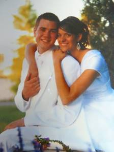
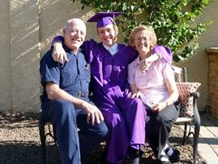
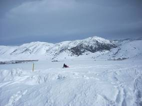
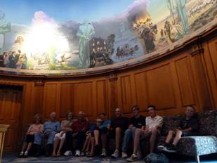
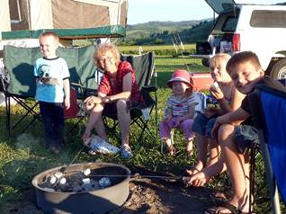
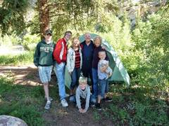
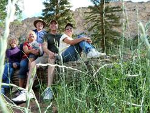

Chapter 61 – Year 2011
I love the Holiday season, and one of the great things I love about it is hearing from our friends and loved ones. Some send photo cards, and Ken and I love these to see how their families have grown. Some send letters and we love these so we can hear what they and their families have been doing during the past year, and some send Christmas cards, and we also love these as we know that they are thinking of us and sending their love and good wishes. Because we love to receive them, we like to send them as we love and appreciate all of them very much.
Ken and I enjoyed our mission to California at South Valley Farms. We received permission to return home the end of February, which was a week early, so we could be with our grandson, David Michael, as he was set apart for his mission to Africa and also be with our family as David spoke in their Sacrament Meeting prior to leaving the following Wednesday. We stayed with Mike & Becky & their family until David left. It was great to be home with our family again.
Some of the other highlights of this year are:
· Our oldest grandson, Garrett Seymore, married a beautiful girl, Nora, in the Manti Temple on May 11th. Garrett is Shellie & Roy’s oldest son. We drove to Arizona for their wedding and reception. Several of our children and grandchildren came also.
· Our summer and fall have been really busy with gardening, vacationing with our children and their families or friends, family reunions, fishing, tending grandchildren or taking them to special places with us, doing projects and canning lots of fruit and vegetables from our garden.
Ken and I were there also for Garrett’s brother, Quint’s seminary and high school graduation. It is special to be able to come to support these special grandchildren. We sure love all of our wonderful family.
For Ken’s birthday, we again went snowmobiling at Trail Canyon Lodge with Sandi & Nick. It’s a fun tradition. We couldn’t go last year as we were on our California Mission. I think it was this year that Ken decided to head up a steep mountain. I wouldn’t ride behind him, but he didn’t want me to anyway. Neither Sandi nor Nick wanted to go either and Ken shouldn’t have as it was too steep and the snowmobile couldn’t make it and rolled over on top on him. We were at the bottom and when we all saw that, we panicked and Sandi ran up the mountain to her dad as fast as she could. Boy, I couldn’t believe how fast she got up there. I ran after her, but it was so steep and slick that I was having a really hard time getting to Ken. Both Sandi & I were trying to pull it back off him, but it was too heavy and Ken said not to. Nick was trying to get to us, but really having a hard time and we yelled for him to hurry. When he got there, Ken told us to roll the snowmobile forward off him. We were worried about crushing him, but we did and Nick grabbed hold of the handlebars as it turned right side up, and flew down the mountain holding on to it and was able to guide it down safely. Ken was alright, thank goodness, as he had his helmet on and that protected his head, but he said he was having a hard time breathing and was thankful we were able to get it off him as soon as we did. He agreed that that was a foolish thing to do and he promised us he wouldn’t do anything like that again.
One of our vacations was with Shellie, Roy & 3 sons, Quint, Kevis & Jase. Sandi & Dawson, Scott, Mishelle & family and Jeff, Gail & family in 2011.
Schedule of Shellie, Roy and sons Road Trip vacation in July of 2011
July 1 (Friday) Leave home & drive to & see the Grand Canyon then continue on to Zion's & camp there.
July 2 (Sat) See some of Zion's Canyon, go to Cove Fort & tour it, then on to the SL valley where we'll spend the night @ Jeff's home.
July 3 (Sun) Go to church w/ Gail & the kids then spend the day with Jeff & Gail playing games. Go to Sandi's & spend the night w/ her.
July 4 (Mon) Celebrate Independence Day in Grantsville as they have a parade & great activities all day ending with fireworks. Mom & Dad will join us & after the fireworks we'll go spend the night @ their home.
July 5 (Tues) Go fishing with Dad B.
July 6 (Wed) Spend day @ Lagoon.
July 7 (Thurs) Drive to Lava Hot Springs & play in water there. Drive on & camp @ Island Park, ID.
July 8 (Fri) Tour Island Park & West Yellowstone then drive on & stop @ the Lewis & Clark Caverns & tour them, then travel on to Glacier & camp for the night (LONG DAY).
July 9 (Sat) Drive through seeing Glacier & go into Canada then spend night in Glacier again.
July 10 (Sun) Drive to Yellowstone & stay there.
July 11 (Mon) See Yellowstone & go on to Cody. Stay with Mom & Dad S. if available? Go to rodeo?
July 12 (Tues) See Cody & murals? Go on to Grand Tetons Nat. Park & Jackson Hole then stay in Star Valley.
July 13 (Wed) Drive to Flaming Gorge & play in water & camp.
July 14 (Thurs) Drive to Durango, CO & camp nearby.
July 15 (Fri) Spend day in Durango (maybe go on train ride) then drive to & camp @ Mesa Verde.
July 16 (Sat) See Mesa Verde & camp there again.
July 17 (Sun) Stop @ Four Corners for picture & drive home!
Ken and I were with them most of this time except we stayed longer at Lava Hot Springs as Scott, Mishelle & family and Jeff, Gail & family were coming up and we wanted to spend time with them also. Scott & Mishelle & family were there when Shellie, Roy & sons and Sandi & Dawson were there so we all went rafting down the river a few times. It was fun. We also went to the mineral hot pools in Lava for one evening and we all enjoyed that. Jeff & Gail came the next day after Shellie & family and Sandi & Dawson had left. We all enjoyed being together. We ate together, played games, visited and played on the teeter totters which were in the campsites. After Scott, Jeff and families left to go home,
Ken and I drove on up to Cody Wyoming to join up with our daughters and families. Roy’s parent’s, Veldon & Patsy, were on a mission there so we stayed with them and spent the following day with them showing us around Cody. We went to the church, where they serve, as it is also a museum and they took us on a tour of it. They then took us to the Buffalo Bill Cody museum and it was a fun place. They even had lots of guns and other memorabilia from Jonathon and John Browning. They had a Wild West show enactment on the streets in the evening. It was ok, but we saw much better ones at Old Tucson, Arizona when we went there, while living in Arizona.
 The next day we left Veldon & Patsy and drove on to Jackson Wyoming and spent the night there in a great motel. We all ate dinner at a cute café and then Ken and the boys went back to the motel and went swimming and in the hot tub. Ken’s feet were hurting so he didn’t feel like walking longer, but Shellie, Roy, Sandi and I walked down town and into the shops. Sandi, Shellie & I bought a T shirt and we had fun being together. The next morning, we ate at a nice café and had a good breakfast, then went on our way to Flaming Gorge. We set up camp and then let everyone take our boat and go boating while Ken and I fixed a Dutch Oven Dinner for all of us. They didn’t stay very long as it started to rain. We enjoyed visiting and singing around the campfire that night.
After breakfast and pictures the next morning, all of them left us to go on their way to Durango Colorado where they spent another couple of days. Then they separated, and Sandi and Dawson left them and came back home and Shellie, Roy and boys went on to their home in Arizona. Ken and I wanted to stay longer at Flaming Gorge, so we enjoyed camping there for a couple more days. Ken caught fish in the stream by where we camped, and we took the boat and went fishing in the Gorge. We had a great time.
Another vacation was going to Zion’s National Park again this year with Jeff, Gail & kids, we went in September instead of October and it was way hot. We had to go on the trails during the morning hours and then play in the river in the afternoons. We were glad we had the river close by. One of the things I remember about this trip was when all of us hiked up the mountain trail on the other side of the tunnel, we met three oriental men. Don’t know if they were from Japan or china. They had expensive cameras and were taking pictures of all the landscape. When we arrived on top, they asked if they could take a picture of us. We agreed, but they wanted more and more pictures. This made us a little nervous. We finally said we had to head back.
We didn’t go to Zion’s in 2012 as Jeff started a new job and didn’t have vacation time yet.